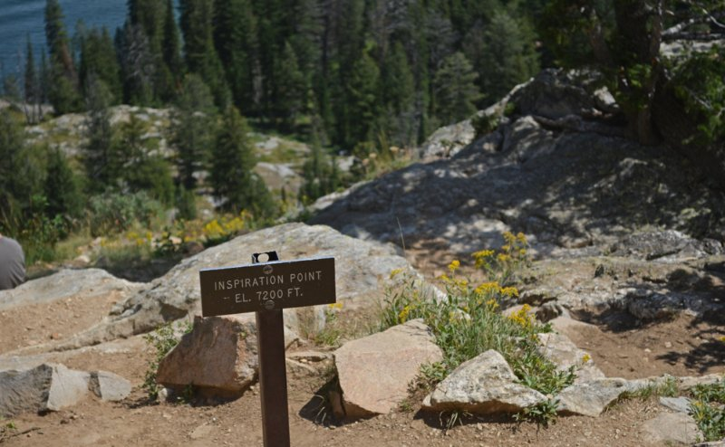
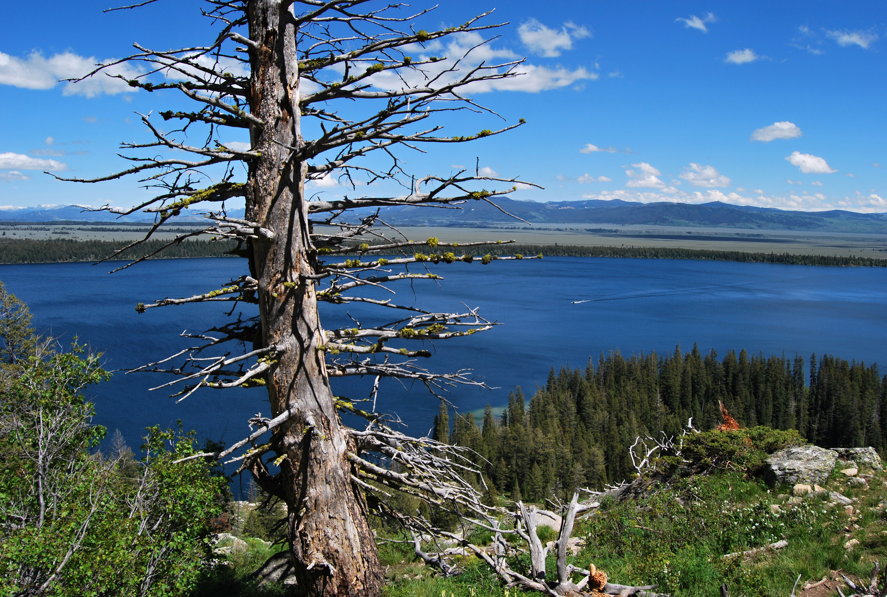
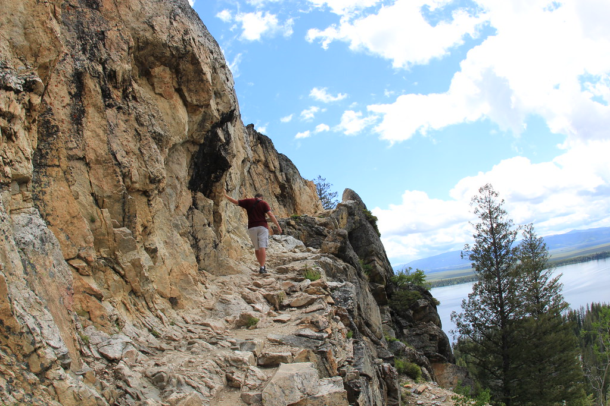

☰
Death Canyon Trailhead
Jenny Lake Trailhead
Granite Canoyon Trailhead
Laurance S. Rockefeller Preserve Trailhead
Inspiration Point
More Info
Day Hikes
Inspiration Point
2-4 Hours
1.8 Miles (1.9 km)
Easy


